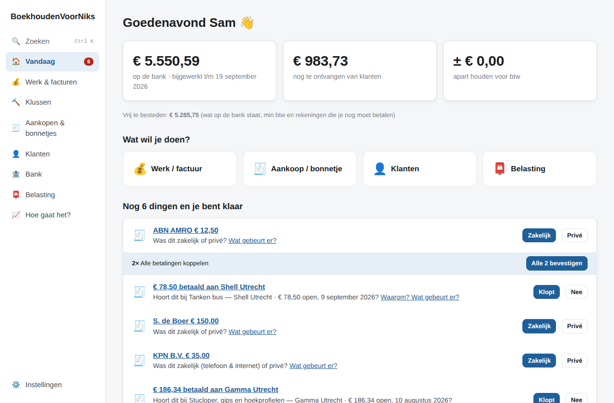
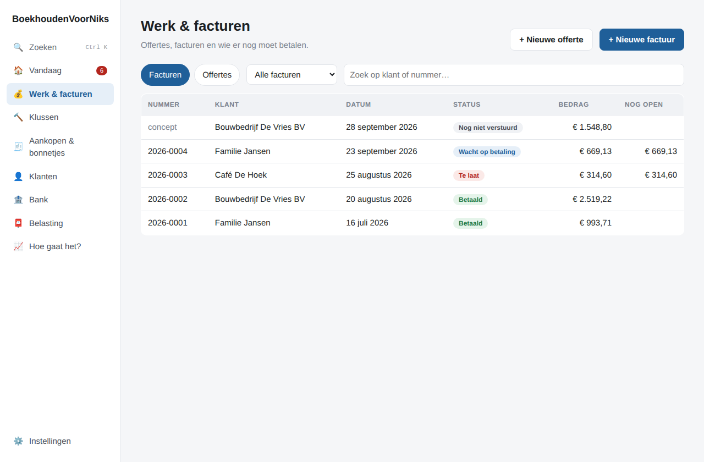
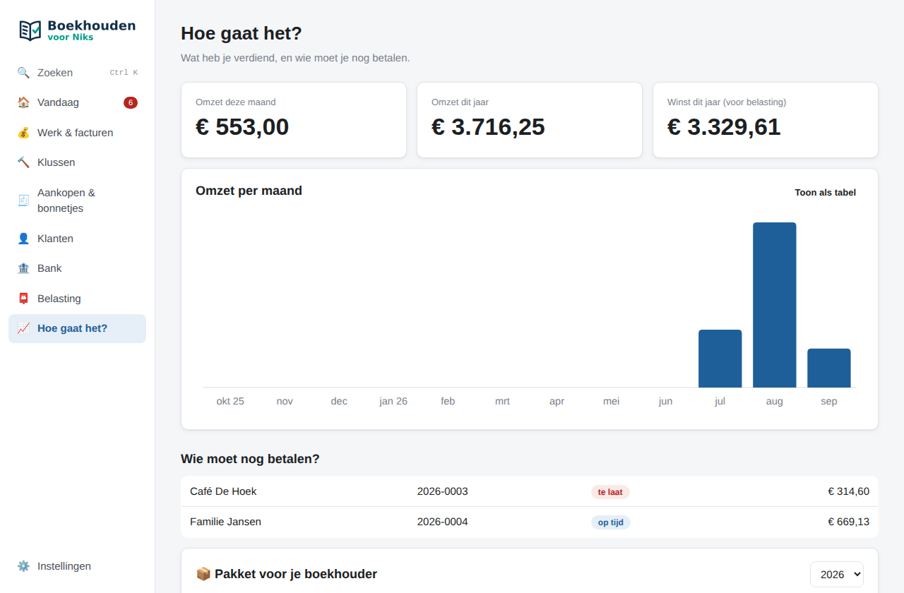

Gratis boekhoudprogramma voor zzp'ers en vakmensen: stukadoors, schilders, timmerlieden, loodgieters, elektriciens
Jij beheert je bedrijf.
Wij maken de boekhouding.
Offertes, facturen, bonnetjes, bank en BTW, zonder dat je iets van boekhouden hoeft te weten. Het programma vraagt alleen iets als het echt niet zeker is.
Gratis · Werkt offline · Je administratie blijft op je eigen computer
Met je boekhouder samenwerken (vanaf 0.7)? De eerste 4 maanden gratis, precies genoeg voor je eerste btw-kwartaal. Daarna € 9 per maand, per maand opzegbaar.

op de bank
nog te ontvangen
apart houden voor BTW
Dit zie je elke ochtend in één oogopslag, zonder tientallen grafieken.
Niet "wat wilt u boeken?", maar "wat is er gebeurd?"
Ik heb werk gedaan
Offerte → klant akkoord → klus → werk klaar → factuur in één klik. Mailen met PDF erbij.
Ik heb een bonnetje
Foto of PDF erin. Wij lezen winkel, datum, bedrag en BTW, en zoeken de betaling op je bank erbij. Privé betaald? Dat zet je met één klik goed.
Er is betaald
Bankafschrift inlezen: betalingen worden automatisch gekoppeld aan facturen en bonnetjes.
BTW-aangifte
"Te betalen € 3.365, uiterlijk 31 oktober." Plus exact wat je invult bij de Belastingdienst.
Je administratie als inbox die leeg kan
Geen lijsten met mutaties, alleen de paar dingen die jouw aandacht nodig hebben:
- € 1.452 ontvangen van De Vries
Dit lijkt betaling van factuur 2026-038. [Klopt] - Praxis € 84,30
Was dit zakelijk of privé? - Klus Jansen is klaar
[Factuur maken]
Is alles verwerkt? Dan staat er gewoon: Je bent bij ✓
Het programma leert van je antwoorden. De eerste keer Bouwmaat vraagt het nog "materiaal?", daarna verwerkt het zulke aankopen automatisch.


BTW zonder rubrieken-stress
Omzet, BTW die je ontving, BTW die je terugkrijgt, en wat je moet betalen. Klik op Bekijk berekening en je ziet precies wat je bij 1a, 1b en 5b invult in Mijn Belastingdienst Zakelijk. Klik op een bedrag om het te kopiëren.
Onder water: een echte dubbele boekhouding met het RGS-rekeningschema. Je boekhouder kan een auditfile (XAF) of saldibalans exporteren.
Hoe gaat het met je bedrijf?
Omzet per maand, winst dit jaar, en wie je nog moet betalen. Meer heb je meestal niet nodig.

Alles wat een vakman nodig heeft
Offertes & facturen
Doorlopende nummering, BTW per regel (21%, 9%, 0%, verlegd, KOR), creditfacturen en automatische herinneringen.
Eigen opmaak
Logo, kleuren, lettertype en vaste teksten, met live voorbeeld.
Bonnetjes & e-facturen
UBL/XML gaat altijd voor, dan de PDF-tekst, en pas daarna lokale tekstherkenning. Twijfel? Dan zie je waar op de bon we het bedrag lazen.
Alle Nederlandse banken
CSV van ING, Rabobank, ABN AMRO, bunq, Knab en Triodos, plus MT940 en CAMT.053.
Webshop & betalingen
WooCommerce en Shopify worden facturen; Mollie Facturen ook. Mollie- en Stripe-uitbetalingen kloppen vanzelf met je bank.
Voor je boekhouder
Eén knop voor een pakket dat je boekhouder in zijn eigen programma inleest: auditfile, kolommenbalans, openstaande posten, RGS en al je bonnen. Voor boekhouders
KOR en buitenland
Met de KOR gaat btw op inkopen naar de kosten, verlegde btw blijft zichtbaar. Goederen en diensten aan EU-bedrijven apart in de ICP-opgaaf.
Aftrekposten
Bedrijfsmiddelen en afschrijving, KIA, kilometers, representatie, starters- en zelfstandigenaftrek, met een jaaroverzicht voor je aangifte.
Samenwerken met je boekhouder vanaf 0.7
Stuur een kwartaal of jaar naar je boekhouder, laat hem corrigeren en lees zijn antwoord in. Wat je intussen deed, blijft staan. Hoe het werkt
Periode afsluiten vanaf 0.7
Klaar met een kwartaal of jaar? Sluit het af, dan verandert er niets meer aan. Een bon die later binnenkomt, gaat naar de volgende periode.
Meer dan één bedrijf vanaf 0.7
Een bv én een eenmanszaak? Elk bedrijf een eigen administratie, met eigen bonnen en back-ups, en snel wisselen.
Back-ups met bijlagen
Elke dag een back-up, ook versleuteld, inclusief alle bonnen en facturen. Terugzetten op een nieuwe computer werkt gewoon.
De fiscale regels zijn in versie 0.5.0 aangescherpt na een review van de btw- en inkomstenbelastingberekeningen. Zie wat er veranderde.
Overstappen zonder opnieuw te beginnen
Kom je van een ander programma, van Excel of van je boekhouder? Kies een instapdatum en de overstap-hulp zet je lopende administratie over, onderdeel voor onderdeel.
- Auditfiles inlezen
XAF uit bijvoorbeeld SnelStart, e-Boekhouden, Moneybird, Exact of Jortt. Heb je er één per jaar? Zet ze allemaal tegelijk neer, ook als ze geen beginbalans hebben (zoals bij DigiBoox). - Of het overzicht van je boekhouder
Kolommen- of saldibalans en een lijst met openstaande facturen, als Excel of CSV. - Alles loopt door
Banksaldi, openstaande facturen, bus en gereedschap met hun echte aankoopdatum, btw en leningen.
Controles laten zien of je banksaldo aansluit en of het klopt met de balans van je boekhouder. Stoppen mag: alles wordt meteen bewaard.
Zo werkt het
- Kies je instapdatum, bijvoorbeeld 1 januari of de dag na de laatste boeking in je oude programma.
- Sleep je auditfiles of het overzicht van je boekhouder erin.
- Kijk na wat de app heeft ingevuld en vink af wat klopt.
- Lees je bankafschriften in vanaf de instapdatum. Betalingen van oude facturen worden vanzelf gekoppeld.
Laat je startbalans nakijken door je boekhouder.
Je boekhouder hoeft niet over te stappen
Jij boekt hier. Aan het eind van het jaar maak je met één knop een pakket voor je boekhouder. Dat leest hij in zijn eigen programma in: Caseware, AFAS, Visionplanner, Twinfield, Yuki, SnelStart of Exact Online.
- Auditfile (XAF 3.2)
Grootboek met RGS-codes, relaties, beginbalans en alle boekingen. Gecontroleerd tegen het officiële schema. - De overzichten die hij gewend is
Kolommenbalans, grootboekkaarten, journaalposten, openstaande posten en RGS-brugstaat, als Excel en CSV. - Alle facturen en bonnen
Als losse bestanden, met een lijst die elk document aan de boeking koppelt. - Klaar voor SnelStart, Yuki en AFAS
Bestanden in het importformaat van die pakketten, zonder kolommen te koppelen.
Vooraf zie je of alles aansluit en bij welke aankopen nog een bon ontbreekt.
Ben je boekhouder?
Probeer het voorbeeldpakket in je eigen dossier: een verzonnen stukadoorsbedrijf met facturen, bonnen en een lees-mij met de aansluiting.
Alles voor boekhouders: inhoud, importroutes en proefimport →
Samenwerken met je boekhouder vanaf 0.7
Werkt je boekhouder ook met BoekhoudenVoorNiks? Dan hoef je niets te mailen of over te typen. Je stuurt hem een periode, hij corrigeert, en jij leest zijn antwoord in.
- Alleen jouw boekhouder kan het openen
Hij stuurt je een uitnodiging; jullie vergelijken één keer een controlecode. Daarna is elke export versleuteld voor zijn kantoor. Wachtwoorden en koppelingen gaan niet mee. - Jij werkt gewoon door
De periode die bij je boekhouder ligt, staat vast. Alles daarna kun je gewoon boeken, en blijft staan als je zijn antwoord inleest. - Afgewerkt is afgewerkt
Na het inlezen is de periode afgesloten. Zijn correcties staan erin, precies zoals hij ze maakte. - Niets via onze servers
Het bestand gaat per e-mail of als bestand rechtstreeks van jou naar je boekhouder en terug.
Zo werkt het
- Je boekhouder stuurt je een uitnodiging. Je opent hem en vergelijkt de controlecode.
- Kies het kwartaal of jaar en klik op Mailen naar je boekhouder.
- Je boekhouder opent je administratie, corrigeert wat nodig is en stuurt een antwoord.
- Je leest het antwoord in. Klaar: de periode is afgesloten.
Voor boekhouders gratis. Voor jou onderdeel van het abonnement; een antwoord inlezen kan altijd. Voor boekhouders →
Net begonnen als zzp'er? Zo start je goed
Ingeschreven bij de KvK en straks je eerste factuur? Met BoekhoudenVoorNiks heb je vanaf dag één een nette administratie, zonder dat je iets van boekhouden hoeft te weten.
- Je eerste factuur in een paar minuten
Met je logo, KvK- en btw-nummer, doorlopende nummering en de juiste btw. - Je eerste btw-aangifte in gewone taal
"Te betalen € 312, uiterlijk 31 januari", plus precies wat je invult bij de Belastingdienst. Ook met de kleineondernemersregeling (KOR). - Zelfstandigenaftrek en andere aftrekposten
Het jaaroverzicht laat zien welke aftrekposten voor jou gelden, bijvoorbeeld als je aan het urencriterium voldoet, zodat je niets vergeet bij je inkomstenbelasting. - Geld apart voor de btw
Je ziet elke dag hoeveel van het geld op je rekening eigenlijk van de Belastingdienst is.
4 maanden gratis samenwerken met je boekhouder vanaf 0.7
Het programma is altijd gratis. Wil je dat een boekhouder meekijkt, dan stuur je hem vanuit de app je kwartaal en lees je zijn correcties in. De eerste 4 maanden zijn gratis: genoeg om je eerste btw-kwartaal samen goed af te sluiten.
- Daarna € 9 per maand exclusief btw, per maand opzegbaar
- Opzeggen in de gratis maanden? Dan betaal je niets
- Voor je boekhouder is het gratis
Bij het afsluiten betaal je € 0,01 met iDEAL voor de machtiging. Checklist voor starters · Prijzen · Voorwaarden
Boekhouding voor jouw vak
Boekhouding voor stukadoors
Factureer per m² stucwerk of spuitwerk, met 9% btw op arbeid bij woningen ouder dan 2 jaar en 21% op materiaal. Werk je als onderaannemer, dan zet je de btw met één keuze op verlegd.
Boekhouding voor schilders
Offerte per m² of per uur, verf en materiaal als aparte regel, en bonnetjes van de bouwmarkt of groothandel direct verwerkt.
Timmerlieden en klusbedrijven
Van offerte naar klus naar factuur. Per klus zie je wat je aan materiaal hebt uitgegeven en wat je eraan verdient.
Loodgieters en installateurs
Arbeid, materiaal en voorrijkosten op één factuur, en automatische herinneringen als een klant te laat betaalt.
Elektriciens
Inkoop bij de groothandel via e-factuur (UBL) wordt zonder overtypen verwerkt, inclusief de btw die je terugkrijgt.
Webdevelopers en ICT'ers
Uren en hosting factureren, AI-tools en software uit het buitenland goed in je btw, en klanten in andere EU-landen. En ook als je iets anders doet: het werkt voor elke eenmanszaak.
Het 9%-tarief voor arbeid geldt onder voorwaarden. Twijfel je, vraag het dan na bij je boekhouder.
Lees meer: btw-aangifte zelf doen · boekhoudprogramma zonder abonnement, offline en open source · checklist voor starters
Prijzen
Het programma is altijd gratis: geen proefperiode, geen limiet op facturen of bonnetjes. Met het abonnement steun je de verdere ontwikkeling en krijg je de extra functies, nu de uitwisseling met je boekhouder. De eerste 4 maanden daarvan zijn gratis.
BoekhoudenVoorNiks
Gratis
voor altijd, zonder account
- Offertes, facturen, bonnetjes, bank en btw
- Pakket voor je boekhouder (auditfile)
- Overstappen, back-ups, periode afsluiten
- Open source; je administratie op je eigen computer
Abonnement
steun de ontwikkeling en krijg de extra functies
Eerste 4 maanden gratis
€ 9
per maand, exclusief btw (€ 10,89 inclusief)
- De eerste 4 maanden gratis: een btw-kwartaal uitproberen
- Uitwisseling met je boekhouder: een periode naar hem sturen en zijn correcties inlezen
- Online hulp bij categorievoorstellen: weet de app bij een onbekende winkel niet waar een bon voor was, dan kiest onze online hulp uit jouw categorieën (alleen winkelnaam en artikelen gaan mee; standaard uit)
- Nieuwe extra functies komen erbij; wat je hebt, houd je
- Per maand opzegbaar, in de app
- Betalen via Mollie: € 0,01 met iDEAL voor de machtiging, daarna automatische incasso
- Elke maand een factuur op naam van je bedrijf
Voor boekhouders
Gratis
voor elk kantoor
- Klanten uitnodigen en hun export openen
- Corrigeren en een antwoord terugsturen
- Meerdere klanten in één app, sleutel delen met collega's
Het abonnement is voor ondernemers. Bij je eerste abonnement zijn de eerste 4 maanden gratis; daarna loopt het per maand, je betaalt vooruit en zegt op wanneer je wilt, dan loopt het af na de betaalde maand. Zeg je in de gratis maanden op, dan betaal je niets. Zie de voorwaarden.
Veelgestelde vragen
Is BoekhoudenVoorNiks echt gratis?
Ja. Het programma is altijd gratis te downloaden en te gebruiken: geen proefperiode, geen limiet op facturen of bonnetjes en geen account, en je administratie staat op je eigen computer. Alleen de uitwisseling met je boekhouder (een periode versturen en zijn correcties inlezen) is een los abonnement: de eerste 4 maanden gratis, daarna € 9 per maand exclusief btw (€ 10,89 inclusief). Die heb je niet nodig om je boekhouding te doen.
Ik ben net gestart als zzp'er. Is BoekhoudenVoorNiks iets voor mij?
Ja. Het programma is gemaakt voor ondernemers die geen boekhouder willen worden. Je maakt je eerste offerte en factuur, verwerkt bonnetjes en bank, en ziet elk kwartaal wat je bij de btw-aangifte invult. Wil je dat een boekhouder meekijkt, dan zijn de eerste 4 maanden samenwerken gratis: genoeg voor je eerste btw-kwartaal. Het programma zelf blijft altijd gratis.
Wanneer doe ik mijn eerste btw-aangifte?
Meestal doe je per kwartaal aangifte. De aangifte en de betaling moeten uiterlijk de laatste dag van de maand na het kwartaal binnen zijn: voor het eerste kwartaal dus 30 april. Het programma laat per kwartaal zien wat je moet betalen of terugkrijgt, tot wanneer, en precies wat je in elke rubriek invult. Twijfel je, vraag het dan aan je boekhouder of de Belastingdienst.
Wat is de uitwisseling met je boekhouder?
Werkt je boekhouder ook met BoekhoudenVoorNiks, dan stuur je hem een kwartaal of jaar, versleuteld zodat alleen zijn kantoor het kan openen. Hij corrigeert wat nodig is en stuurt een antwoord terug. Jij leest dat in; wat je intussen deed blijft staan, en de periode is daarna afgesloten. Beschikbaar vanaf versie 0.7.
Wat als mijn boekhouder niet met BoekhoudenVoorNiks werkt?
Dan gebruik je het gratis pakket voor je boekhouder: met één knop een auditfile en de overzichten die hij in zijn eigen programma inleest. Een abonnement heb je daarvoor niet nodig.
Hoe betaal ik het abonnement, en krijg ik een factuur?
Je sluit het af in de app. Bij je eerste abonnement betaal je via Mollie alleen € 0,01 met iDEAL, voor de machtiging; de eerste 4 maanden zijn gratis. Daarna gaat het automatisch per incasso, en zeg je voor die tijd op, dan betaal je niets. Van elke betaalde maand krijg je per e-mail een factuur op naam van je bedrijf, met de btw apart vermeld. Voor de factuur vraagt de app je bedrijfsnaam, adres en KvK- of btw-nummer.
Hoe zeg ik mijn abonnement op?
In de app, met de knop Opzeggen. Er wordt daarna niets meer afgeschreven. Je kunt nog versturen tot het eind van de maand die je betaald hebt; een antwoord van je boekhouder inlezen kan altijd. Je krijgt het bedrag van de lopende maand niet terug.
Kan ik een periode afsluiten, ook zonder boekhouder?
Ja, dat is gratis. Kies het kwartaal of jaar, de app laat zien wat er nog moet (betalingen verwerken, bonnen controleren) en sluit het af. Daarna verandert er niets meer in die periode; een bon die later binnenkomt, komt in de volgende periode. Beschikbaar vanaf versie 0.7.
Ik heb een bv én een eenmanszaak. Kan dat?
Ja. Vanaf versie 0.7 maak je voor elk bedrijf een eigen administratie op dezelfde computer, met eigen klanten, bonnen, bank, btw en back-ups, en wissel je er snel tussen.
Kan ik als zzp'er mijn btw-aangifte ermee doen?
Ja. Het programma rekent je btw per kwartaal (of maand) uit uit je facturen en aankopen, en laat precies zien wat je invult bij de rubrieken 1a, 1b, 1e, 2a en 5b in Mijn Belastingdienst Zakelijk. Direct elektronisch indienen via Digipoort is nog in voorbereiding.
Werkt het met btw verlegd en de kleineondernemersregeling (KOR)?
Ja. Per factuurregel kies je 21%, 9%, 0%, btw verlegd of vrijgesteld (KOR). Bij btw verlegd controleert het programma of het btw-nummer van je klant op de factuur staat. Met de KOR telt de btw op je inkopen bij de kosten, en verlegde btw die je toch moet betalen staat per kwartaal op het btw-scherm.
Kan ik overstappen vanuit een ander boekhoudprogramma?
Ja. Kies een instapdatum en lees een auditfile (XAF) uit je vorige programma in, of het overzicht van je boekhouder (kolommen- of saldibalans en openstaande facturen). Heb je een auditfile per jaar, dan zet je ze allemaal tegelijk neer. De app vult je startbalans in; jij kijkt het na.
Welke banken worden ondersteund?
Elke bank: lees je afschrift in als CAMT.053 of MT940. Een CSV van ING, Rabobank, ABN AMRO, bunq, Knab, Triodos of Revolut herkent de app vanzelf; bij andere banken geef je één keer aan welke kolom wat is. Betalingen worden automatisch gekoppeld aan je facturen en bonnetjes.
Heb ik boekhoudkennis nodig?
Nee. Je werkt met klanten, klussen, offertes, facturen en bonnetjes. Het programma maakt daar automatisch een dubbele boekhouding van en vraagt alleen iets als het niet zeker is.
Waar staat mijn administratie?
Op je eigen computer, in een lokaal databasebestand. Er is geen cloud nodig. Elke dag wordt automatisch een back-up gemaakt en je kunt zelf een kopie maken op een USB-stick.
Kan mijn boekhouder ermee werken?
Ja, en hij hoeft er zelf niet in te werken. Met één knop maak je per boekjaar een pakket voor je boekhouder: auditfile (XAF 3.2), kolommenbalans, grootboekkaarten, openstaande posten, RGS-brugstaat en al je facturen en bonnen. Dat leest hij in bij Caseware, AFAS, Visionplanner, Exact, Twinfield, Yuki of SnelStart. Meer voor boekhouders.
Voor welke beroepen is het bedoeld?
Voor zzp'ers en kleine ondernemers, met name vakmensen: stukadoors, schilders, timmerlieden, loodgieters, elektriciens en klusbedrijven. Bij het instellen kies je je vak, zodat veelgebruikte factuurregels klaarstaan.
Op welke computers werkt het?
Op Windows en Linux. Het programma werkt ook zonder internetverbinding; alleen voor het versturen van e-mail en updates is internet nodig.
Windows zegt "Windows heeft uw pc beveiligd". Is dat veilig?
Die melding (SmartScreen) verschijnt bij programma's die nog niet met een betaald certificaat ondertekend zijn. Download de installer alleen van boekhoudenvoorniks.nl, of haal het programma uit de Microsoft Store: daar verschijnt de melding niet. Wil je zeker weten dat het bestand niet is aangepast? Vergelijk het SHA-256-controlegetal met het controlegetal op de downloadpagina (in PowerShell: Get-FileHash). Klopt het, klik dan op "Meer informatie" en daarna op "Toch uitvoeren".
Wie maakt BoekhoudenVoorNiks?
ShipDocs, Middelweg 211, 1911 EE Uitgeest (KvK 95207341, btw NL005138041B29). Je bereikt ons via info@shipdocs.app of +31 20 369 5765.
Is de broncode openbaar?
Ja. BoekhoudenVoorNiks is open source onder de GNU Affero General Public License v3.0 of later (AGPL-3.0-or-later). Iedereen kan de code bekijken en controleren wat het programma doet.
Je administratie blijft van jou
Alles staat op je eigen computer: geen account en geen cloud. Tekstherkenning en AI draaien lokaal (als je ze aanzet), en er gaan geen bonnetjes naar externe servers. Ook bij de uitwisseling gaat je administratie rechtstreeks van jou naar je boekhouder, niet via ons.
Elke dag wordt er automatisch een back-up gemaakt. Wachtwoorden en API-sleutels worden versleuteld opgeslagen.
AI verzint nooit je boekhouding
AI mag voorstellen: "dit lijkt gereedschap". Hoe dat geboekt wordt, bepalen vaste, geteste regels. Zo is elke boeking reproduceerbaar en uitlegbaar, en verandert er niets als er een ander model wordt gebruikt.
Klaar met boekhouden?
Installeren, vijf vragen beantwoorden, eerste factuur maken.
Download BoekhoudenVoorNiksWindows: download alleen van deze website en klik bij de SmartScreen-melding op "Meer informatie" → "Toch uitvoeren". Het controlegetal (SHA-256) staat op de downloadpagina. Controleer je btw-aangifte altijd zelf; zie de voorwaarden.